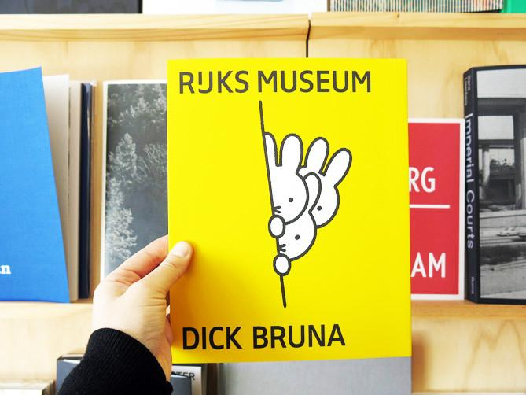
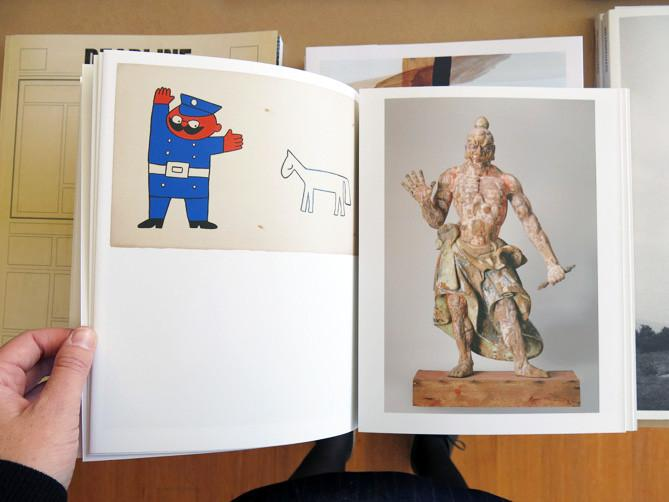
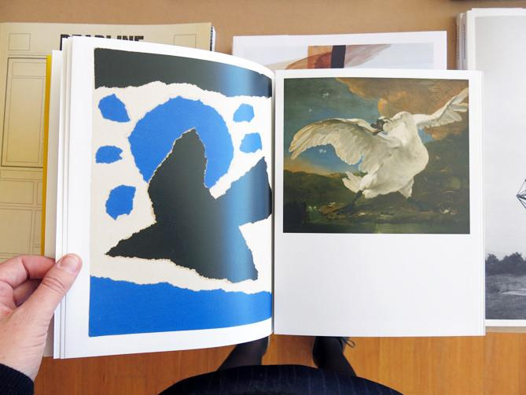

My maximum book is an exploration of "the gaze". I'm sourcing images from the Met collection of public domain artworks to investigate this concept. The images will be artworks depicting people, these will include paintings, photographs, sculptures and more.
The format of the book will be in the style of a traditional artbook or museum catalogue, with three distinct master layouts that form different contexts for the subjects in the images.
The Phenomenom of "The Look" by George J. Stack and Robert W. Plant
"There are many social situations in which the gaze indicates attention, interest or fascination. The way in which a group of people focuses its attention on a performer, a speaker or a teacher under normal conditions is usually by means of the look. In fascination and curiosity there is also a tendency to focus one’s gaze upon the individuals, the events, situations or phenomena that stimulate such reactions. It is clear that the social context in which staring is manifested is an important factor in determining the meaning of staring at or looking at someone. In situations in which an individual is offering a presentation, performing, giving a speech or lecturing it would be unusual for the object of visual attention to interpret staring as hostile, aggressive, or menacing. The intentionality of the gaze varies in relation to the context and the ambience in which it is manifested."
"The typical reciprocal staring or persistent eye contact in situations in which two individuals are emotionally or sexually attracted to one another indicates that the subjective meaning of the encounter is a highly relevant factor."
"The apparent break with the continuity running through the negative reactions to being gazed upon may be accounted for in terms of the symbolic transformation of specific experiences by means of an infusion of cultural meaning. Perhaps the negative reactions to “the look” in man are residues of primitive, natural responses to eye contact or to being stared at. And perhaps the positive responses to being gazed at are the result of a kind of cultural transsubstantiation of primordial reactions.
"

See More, 98 pages, 20 x 25 cm, paperback, Rijksmuseum (Amsterdam).

Published by Amsterdam’s Rijksmuseum and designed by Irma Boom, this playful book offers surprising juxtapositions of the familiar, colourful drawings by illustrator Dick Bruna with objects from the museum’s collection. Notable works by Dutch masters like Rembrandt, Vermeer, and Van der Helst are presented along with a few by more recent artists, such as George Hendrik Breitner and Jan Schoonhoven. Objects from the colonial period, like a painted ceramic monkey or a golden jug in the shape of a war elephant, add to the fun. Each page unfolds to reveal a detail of the artwork or object, divulging the association between it and Bruna’s simple, original illustrations. (from perimeterbooks.com)
